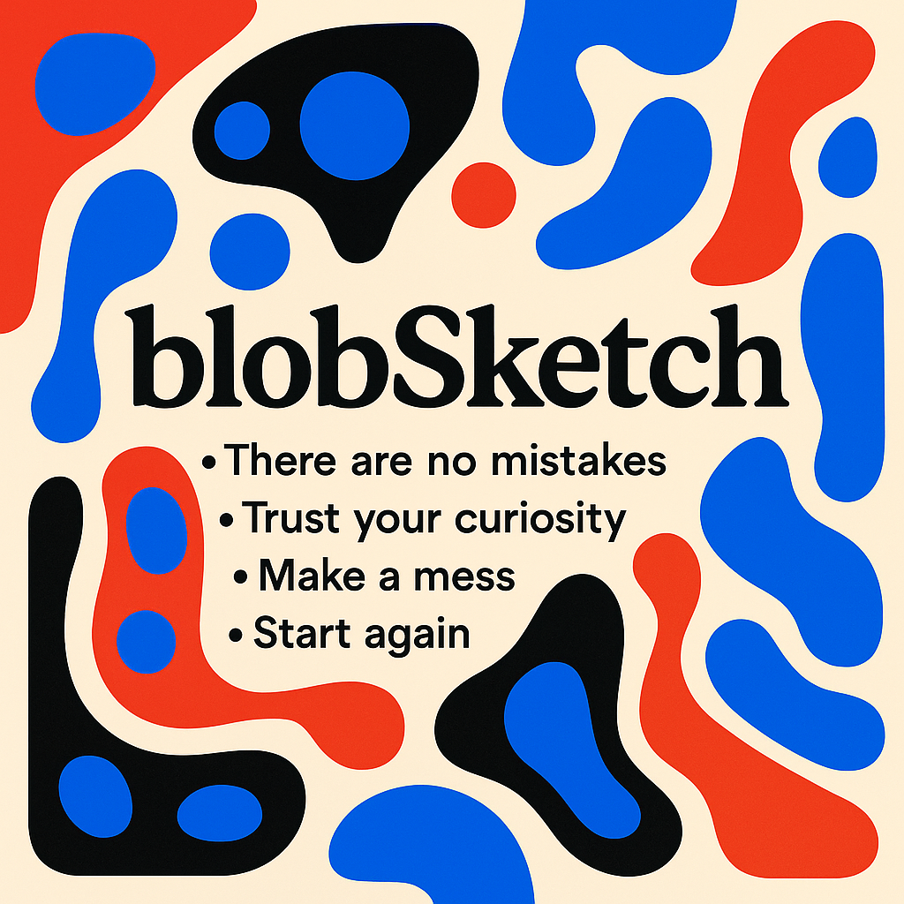
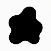
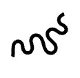
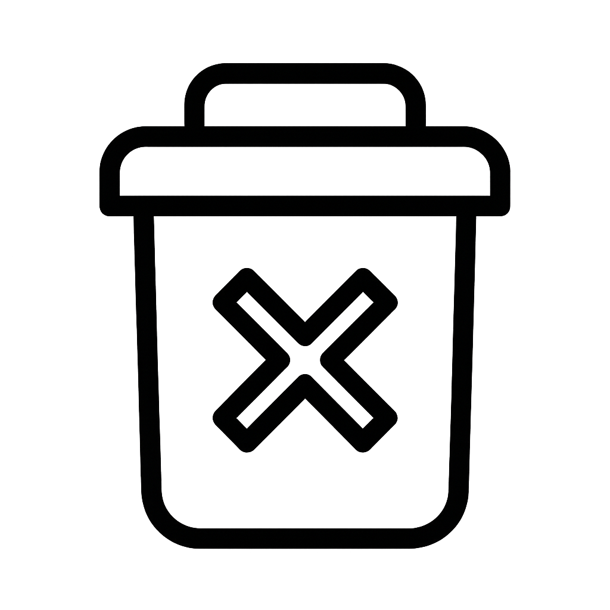
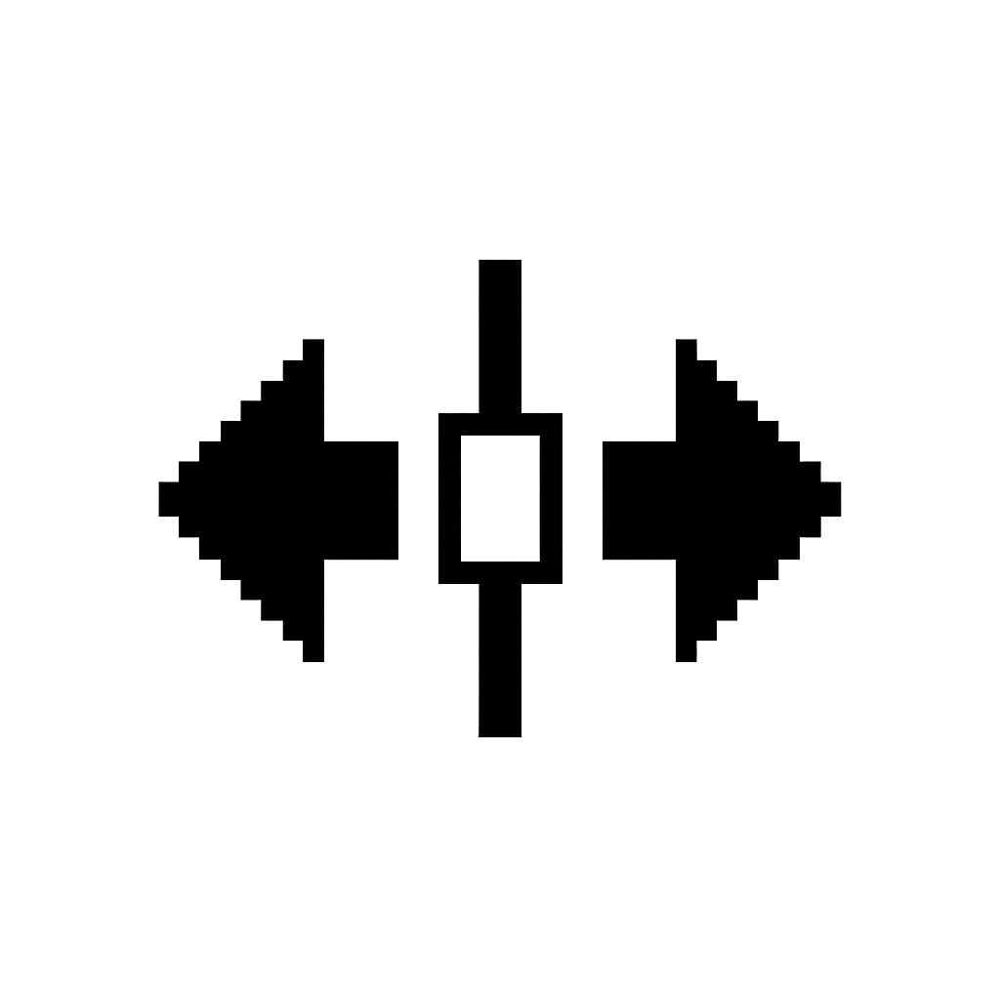
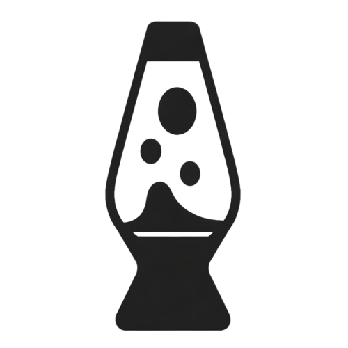
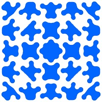
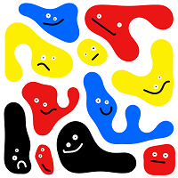

Click and Drag to Start Blobbing
Press ESC to exit Presentation Mode
◀ Prev
Next ▶
End ✖
File
Save Blobs (JSON)
Load Blobs (JSON)
Presentation Mode
Export
SVG
JPG
Presets
About
Help
⛶
🗑️
🔔
☰
⚙
Draw Tools


Edit Tools

Shape Settings
Color
Size
Canvas
🎨


⎌
G
i
Higher = bigger blobs/lines.
Blob Size:
39%
i
Higher = more wobble.
Excitability:
85%
i
Simulated internal fluid pushing outward. Closed blobs inflate uniformly.
Inflation:
0%
i
Higher = tighter shapes.
Stiffness:
30%
i
Higher = more expansion.
Chaos:
10%
i
Shapes animate faster when higher.
Speed:
47%
Select a Preset
Grid of Circles

Grid of Blobs

Blob Face
Close
Grid of Circles
Count
Fit circles to canvas
Radius
Apply
Cancel
Grid of Blobs
Count (rows = cols)
Fit blobs to canvas
Base Radius
Apply
Cancel
blobSketch version 1.4
by Colin Reid
OK
Save Options
Blobs / Lines
Circles
Physics & UI Settings
Save
Cancel
Import Options
Blobs / Lines
Circles
Physics & UI Settings
Import
Cancel
Appearance
Blob Style
Outline
Filled
Width:
4
Traveling Segment
Length:
50
px
Speed:
100
px/s
Canvas
Background Color
Show Grid
Preview
Apply
Cancel